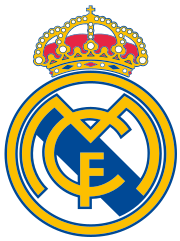

Real Madrid Club de Fútbol (Real Madrid qirollik klubi; koʻpincha ishlatiladigan nomi — Real Madrid) Ispaniyaning professional futbol klubidir. „Real Madrid“ dunyodagi eng katta byudjetli futbol klublaridan biri boʻlib, 2015-yilda klub 3.14 milliardga baholangan. Real Madrid — Ispaniya oliy divizionini hali biror marta ham tark etmagan uch klubdan (Barselona, Atletik Bilbao) biridir. Real Madrid va Barselona ishtirokida klublar oʻrtasida dunyoning eng yaxshi oʻyinlaridan biri boʻlgan „El Clasico“ boʻlib oʻtadi.
Ushbu klub 35 marta La Liga chempionligiga, 19 marta "Copa del Rey" kubogiga, 13 ta Ispaniyaning superkubogiga, 14 ta UEFA Chempionlar Ligasi chempionligiga, 2 ta UEFA kubogiga, 5 ta UEFA superkubogi, 3 ta Xalqaro Chempionlar Kubogi va 8 ta Qitʼalararo kubokga ega.
2000-yilning 11-dekabrida FIFA tomonidan XX asrning eng yaxshi klubi deya topilgan. Yana, 2010-yil 11-may kunida „Real Madrid“ IFFHS tomonidan Yevropaning XX asrdagi eng yaxshi klubi deb topilgan. 2018 yil 26 may kuni Kievdagi "Olimpiyskiy" stadionida boʻlib oʻtgan finalda Liverpoolni magʻlub etib, ketma-ket 3 marotaba Chempionlar ligasida gʻolib boʻla olgan birinchi jamoa.
Tarix
Tashkil topishi
Jamoaning birinchi ramzi (1902—1908)
Jamoaning ikkinchi ramzi (1908—1920)
1896-yili „Futbol sky“ klubi tashkil topdi, Bu klub Madrid klubining birinchi nomi edi. Lekin klubning rasman tashkil topgan sanasi 1902-yil 6-mart hisoblanadiki, oʻsha vaqtda aka-uka Padros va Xulian Palasioslar Madrid Football Club nomli klubni ochishga muvaffaq boʻlishadi. 1920-yil 29-iyun kuni Ispaniya qiroli Alfonso XIII klubni Qirollik klubi mavqeini berishga qaror qildi. Bu mavqei Ispaniyada Real deb nomlanadi. Shuning bilan hozirgi zamonaviy Real Madrid nomi kelib chiqdi.
Klub tashkil topishi bilanoq ispan futboli liderligiga asosiy daʼvogarlik qiladigan klublar qatoriga qoʻshildi. 1903-yilni oʻzidayoq mamlakat kubogi finaligacha chiqdi, ammo finalda Atletik Bilbaoga imkoniyatni boy berdi. Bir necha yillardan soʻng, ketma-ket Ispaniya kubogini toʻrt marta qoʻlga kiritib, uzoq muddat poytaxtda ushlab turishdi. Ispaniya chempionati 1928/29 mavsumidan boshlab oʻtkazila boshlandi, ungacha klublar regionlar boʻyicha kim kuchli ekanligini aniqladilar. „Madrid“ (1920-yildan boshlab — Real Madrid) bungacha poytaxt okrugida 16 marta yetakchilik qildi
Bosh menyu